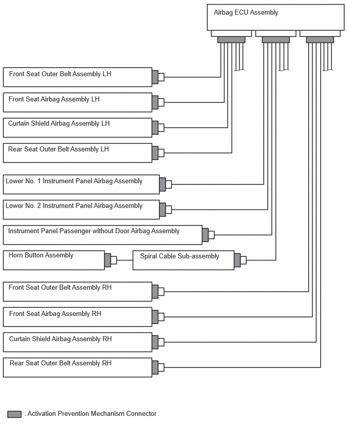
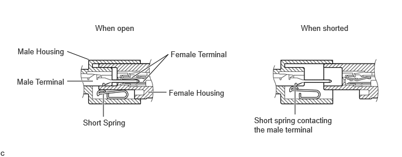
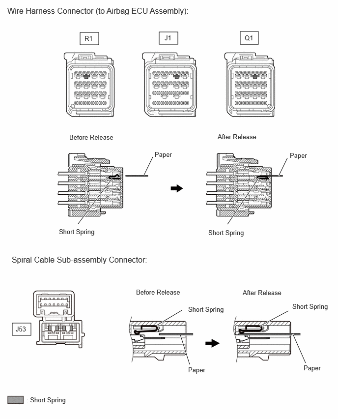

| Last Modified: 10-07-2025 | 6.11:8.1.0 | Doc ID: RM100000002GS7L |
| Model Year Start: 2024 | Model: Tacoma | Prod Date Range: [12/2023 - 03/2024] |
| Title: SUPPLEMENTAL RESTRAINT SYSTEMS: AIRBAG SYSTEM: SYSTEM DESCRIPTION; 2024 MY Tacoma Tacoma HV [12/2023 - 03/2024] | ||
SYSTEM DESCRIPTION
FUNCTION OF SRS CONNECTORS
(a) Location of activation prevention mechanism
(b) Function of activation prevention mechanism
(1) This mechanism is designed to create a short circuit automatically between the positive (+) and negative (-) terminals of a squib power source connector when disconnected.
(2) The short spring contained in the connector creates a closed circuit on the squib side (no potential difference can occur between both terminals), preventing accidental squib deployment when servicing.
(c) Releasing of activation prevention mechanism
(1) To release the activation prevention mechanism, insert a piece of paper with the same thickness as the male terminal (approximately 0.5 mm (0.0197 in.)) between the terminals and short spring to break the connection.
(2) Refer to the following illustrations concerning connectors utilizing the activation prevention mechanism and its release method.
CAUTION:
Never release the activation prevention mechanism on the squib connector even when inspecting with the squib disconnected.
NOTICE:
- Do not release the activation prevention mechanism unless specified by the troubleshooting procedure.
- To prevent the terminals and short spring from being damaged, always use a piece of paper with the same thickness as the male terminal.
HINT:
To prevent improper operation due to static electricity, etc., the connector of the SRS airbag squib circuit has a short mechanism, and the airbag terminal is shorted while the connector is disconnected.